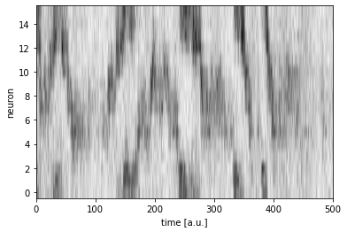
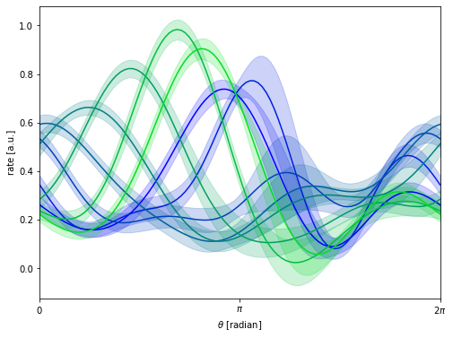

Fitting mGPLVM to data from the fly central complex
In this short notebook, we apply mGPLVM to recordings of the fly central complex.
[1]:
import csv
import matplotlib.pyplot as plt
import numpy as np
import torch
from torch import optim
import mgplvm as mgp
torch.manual_seed(1)
np.random.seed(0)
if torch.cuda.is_available():
device = torch.device("cuda")
else:
device = torch.device("cpu")
np.random.seed(14042010)
torch.manual_seed(14042010)
torch.set_default_dtype(torch.float64)
if torch.cuda.is_available():
device = torch.device("cuda")
else:
device = torch.device("cpu")
loading
[2]:
!mkdir -p data
!wget --no-check-certificate 'https://raw.githubusercontent.com/tachukao/mgplvm-pytorch/master/examples/fly/fly_data.tsv' -O data/fly_data.tsv
--2022-03-18 15:55:19-- https://raw.githubusercontent.com/tachukao/mgplvm-pytorch/master/examples/fly/fly_data.tsv
Resolving raw.githubusercontent.com (raw.githubusercontent.com)... 185.199.109.133, 185.199.108.133, 185.199.110.133, ...
Connecting to raw.githubusercontent.com (raw.githubusercontent.com)|185.199.109.133|:443... connected.
HTTP request sent, awaiting response... 200 OK
Length: 156255 (153K) [text/plain]
Saving to: ‘data/fly_data.tsv’
data/fly_data.tsv 100%[===================>] 152.59K --.-KB/s in 0.01s
2022-03-18 15:55:19 (11.4 MB/s) - ‘data/fly_data.tsv’ saved [156255/156255]
[3]:
with open('data/fly_data.tsv', newline='') as csvfile:
fly_data = np.array(list(csv.reader(csvfile, delimiter='\t')))
[4]:
Y = np.expand_dims(fly_data, 2).astype(float).transpose((2, 0, 1))
n_samples, n, m = Y.shape
[5]:
plt.figure()
Yplot = Y[0, :, :]
plt.imshow(Yplot, cmap='Greys', aspect='auto', origin = 'upper')
plt.xlabel("time [a.u.]")
plt.ylabel("neuron")
plt.xlim(0,500)
plt.ylim(-0.5,n-0.5)
plt.show()
plt.close()

[6]:
d = 1 # dims of latent space
n_z = 15 # number of inducing points
n_samples = 1 # number of samples
[7]:
def build_model():
# specify manifold, kernel and rdist
manif = mgp.manifolds.Torus(m, d) # latent distribution manifold
lat_dist = mgp.rdist.ReLie(manif, m, n_samples) # construct ReLie distribution
# Note: we construct the kernel and likelihood by passing the data in for initialization
kernel = mgp.kernels.QuadExp(
n, manif.distance
) # Use an exponential quadratic (RBF) kernel
lik = mgp.likelihoods.Gaussian(n) # Gaussian likelihood
lprior = mgp.lpriors.Uniform(manif) # Prior on the manifold distribution
z = manif.inducing_points(n, n_z) # build inducing points
model = mgp.models.SvgpLvm(
n, m, n_samples, z, kernel, lik, lat_dist, lprior, whiten=True
).to(device)
return model
[8]:
data = torch.tensor(Y, device=device, dtype=torch.get_default_dtype())
model = build_model()
train_opts = {
"lrate": 5e-2,
"max_steps": 1000,
"n_mc": 64,
"print_every": 100,
"burnin": 30 / 5e-2,
"optimizer": optim.Adam,
}
# train model
progress = mgp.optimisers.svgp.fit(data, model, **train_opts)
iter 0 | elbo -4.772 | kl 0.007 | loss 4.772 | |mu| 0.111 | sig 1.500 | scale 1.000 | ell 2.000 | lik_sig 1.000 |
iter 100 | elbo -0.954 | kl 0.010 | loss 0.956 | |mu| 0.742 | sig 1.362 | scale 0.994 | ell 2.026 | lik_sig 0.942 |
iter 200 | elbo -0.554 | kl 0.021 | loss 0.560 | |mu| 0.816 | sig 1.095 | scale 0.987 | ell 2.040 | lik_sig 0.607 |
iter 300 | elbo 0.037 | kl 0.061 | loss -0.013 | |mu| 1.040 | sig 0.579 | scale 0.955 | ell 2.161 | lik_sig 0.248 |
iter 400 | elbo 0.320 | kl 0.118 | loss -0.263 | |mu| 1.331 | sig 0.230 | scale 0.927 | ell 2.178 | lik_sig 0.174 |
iter 500 | elbo 0.407 | kl 0.151 | loss -0.322 | |mu| 1.438 | sig 0.135 | scale 0.911 | ell 2.040 | lik_sig 0.156 |
iter 600 | elbo 0.425 | kl 0.163 | loss -0.322 | |mu| 1.492 | sig 0.116 | scale 0.896 | ell 1.955 | lik_sig 0.153 |
iter 700 | elbo 0.432 | kl 0.165 | loss -0.319 | |mu| 1.546 | sig 0.111 | scale 0.883 | ell 1.876 | lik_sig 0.152 |
iter 800 | elbo 0.425 | kl 0.161 | loss -0.307 | |mu| 1.593 | sig 0.119 | scale 0.859 | ell 1.867 | lik_sig 0.154 |
iter 900 | elbo 0.425 | kl 0.155 | loss -0.305 | |mu| 1.620 | sig 0.131 | scale 0.823 | ell 1.888 | lik_sig 0.154 |
[9]:
#%% plot tuning curves
query = torch.tensor(np.linspace(0, 2 * np.pi, 100),
dtype=torch.get_default_dtype(),
device=device)[None, None, ...]
data = torch.tensor(Y, dtype=torch.get_default_dtype()).to(device)
fmean, fvar = model.obs.predict(query, full_cov=False)
fstd = fvar.sqrt()
plt.figure(figsize=(8, 6))
for i in range(0, 16, 2):
xs = query.cpu().numpy()
m, std = [arr.cpu().detach().numpy() for arr in [fmean, fstd]]
xs = xs[0, 0, :]
m = m[0, i, :]
std = std[0, i, :]
col = [0, i/16, 1-i/16]
plt.plot(xs, m, "-", color = col)
plt.fill_between(xs, m - 2 * std, m + 2 * std, color=col, alpha=0.2)
plt.xlabel(r"$\theta$ [radian]")
plt.ylabel(r"rate [a.u.]")
plt.xlim(0, 2 * np.pi)
plt.xticks([0, np.pi, 2*np.pi], [r'$0$', r'$\pi$', r'$2\pi$'])
plt.show()
plt.close()

Remember to cite the original authors of the dataset if you use the fly dataset for any further research:
Turner-Evans et al. (2020), Neuron
Daniel, Turner-Evans (2020), Kir.zip. Janelia Research Campus (link to dataset)
The data used in this notebook fly_data.tsv is extracted from Kir control line 1, fly 1, light epoch, subsampled by a factor of 2.